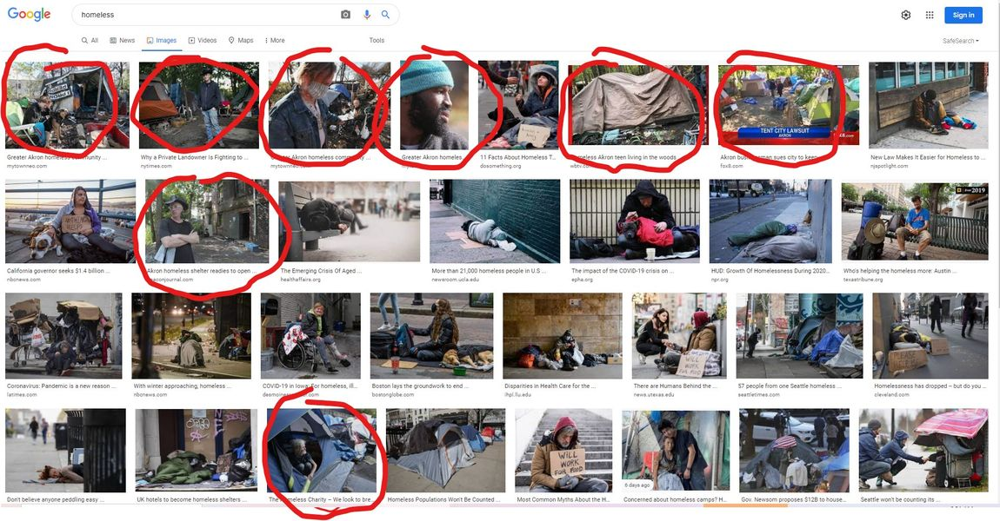

Timeline photos
When you do an image search in Google for the word "homeless" Akron Ohio dominates the search results (that's what happens when an SEO guy takes an interest in homelessness).
Not Skidrow. Not NYC. Not San Francisco. AKRON MOTHER-FUCKING OHIO.
And the ONLY reason that is the case is because our @[139561179458303:274:City of Akron, Ohio - Mayor's Office] Dan Horrigan has completely refused to address this problem. (He has a mad love affair with parks and roundabouts).
I want it to be known that I will always be grateful for Dan's bullheaded, hateful ignorance of the extreme poverty of his city. He is the 2-dimensional antagonist of a story between good and evil. His idiocy will lose him a third term in office and will permanently record him as the worst mayor in the history of Akron.
Place: Akron, Ohio (41.0732, -81.5179)
Address: Akron, OH 44301